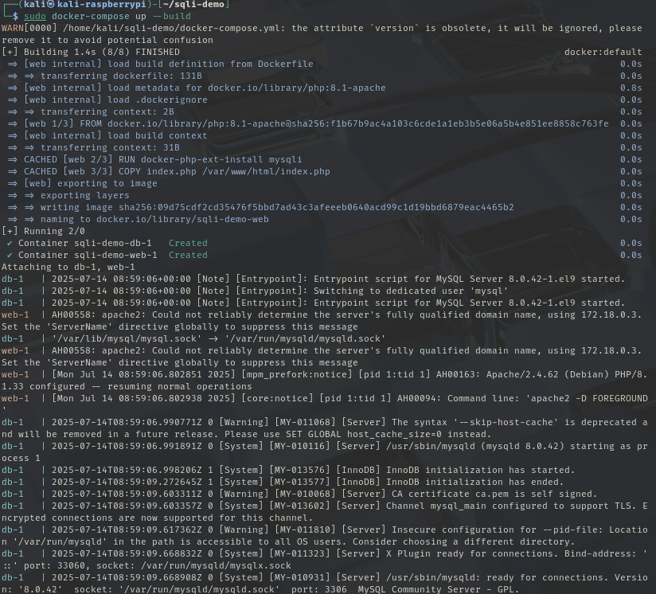
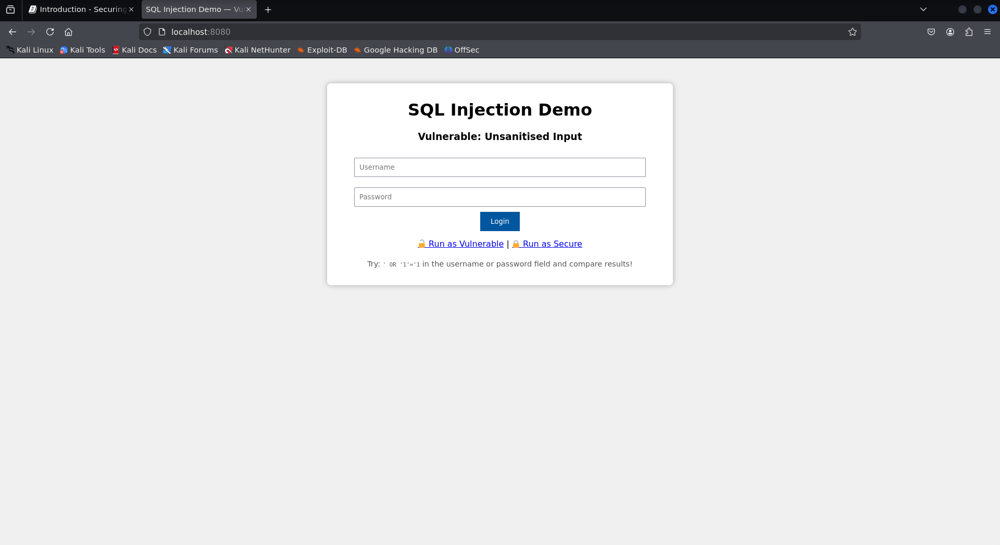
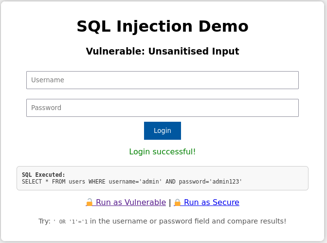
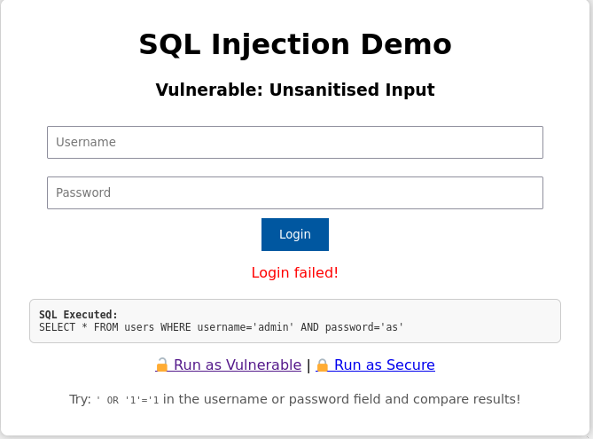
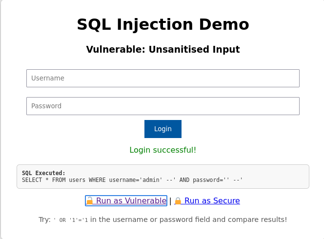
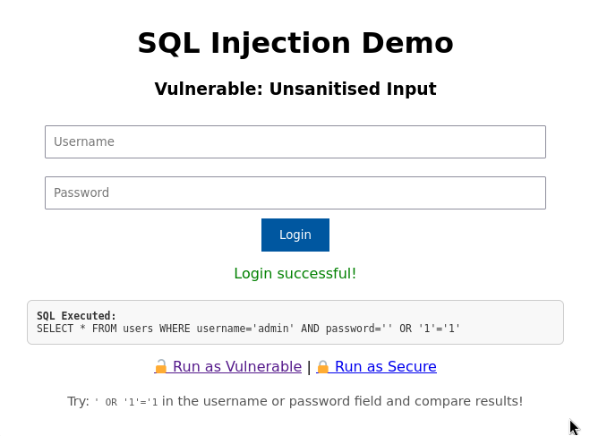
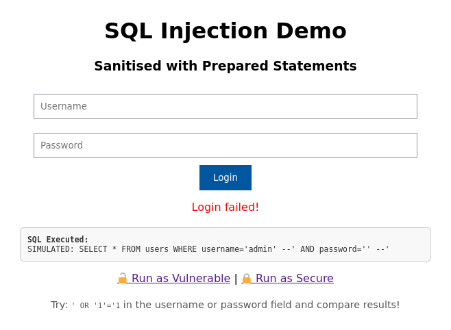
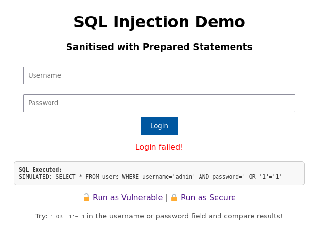

CVE
By the end of this lab you should be able to:
-
Identify how improperly handled user input can lead to command and SQL injection vulnerabilities
-
Explain the underlying mechanics of CVE-2009-1151 (SQL Injection) and CVE-2014-6271 (Shellshock)
-
Exploit both vulnerabilities in a controlled lab environment using crafted inputs
-
Compare vulnerable vs. sanitised/secured implementations of user input handling
-
Describe mitigation strategies for each vulnerability (e.g., prepared statements, input sanitisation, environment variable handling)
-
Reflect on the impact of these vulnerabilities in real-world systems and software supply chains
Part 1: SQL-Injection
In this section you are going to see how to perform a SQL-Injection (sqli) based on the CVE-2009-1151. We will be using the Raspberry Pi 5 with the provided Kali image.
Task 1.1 Setup
-
Create a new folder in the home directory called
sqli-demo -
Inside that directory we need to create an
init.sqlto create a database and initialise a tableCREATE DATABASE IF NOT EXISTS demo; USE demo; CREATE TABLE users (id INT, username VARCHAR(100), password VARCHAR(100)); INSERT INTO users VALUES(1, 'admin', 'admin123');This SQL script sets up the database environment for the injection lab:
-
CREATE DATABASE IF NOT EXISTS demo;
Ensures a database calleddemois available. If it already exists, no error is thrown. -
USE demo;
Switches the active database context todemoso subsequent commands apply to it. -
CREATE TABLE users (id INT, username VARCHAR(100), password VARCHAR(100));
Creates auserstable with three columns: an integer ID, a username (up to 100 characters), and a password (also up to 100 characters). -
INSERT INTO users VALUES(1, 'admin', 'admin123');
Inserts a single admin user with a known password. This allows you to test both valid login attempts and SQL injection attacks.
-
-
Now we can create an isolated environment, you should always do this for security reasons,
DockerfileThis
Dockerfilebuilds a simple web server environment for the SQL injection lab:-
FROM php:8.1-apache
Uses an official Docker image that bundles PHP 8.1 with Apache. This provides a fully functional web server ready to run PHP applications. -
RUN docker-php-ext-install mysqli
Installs themysqliextension, which is required for PHP to interact with MySQL databases. Without this, your PHP code wouldn’t be able to usenew mysqli(...). -
COPY index.php /var/www/html/index.php
Copies our PHP login script (does not exist yet) into the default Apache web root directory. This makes it accessible athttp://localhost/index.php.
-
-
Of course we do not want to be writing out a really long command to launch our docker image... so instead we will create a
docker-compose.ymlversion: '3' services: web: build: . ports: - "8080:80" volumes: - ./index.php:/var/www/html/index.php depends_on: - db db: image: arm64v8/mysql:8.0.42 environment: MYSQL_ROOT_PASSWORD: root volumes: - ./init.sql:/docker-entrypoint-initdb.d/init.sqlThis
docker-compose.ymlfile defines a two-container environment: a web server (web) and a MySQL database (db).-
Specifies the Compose file format version. Version 3 is widely supported and suitable for most setups.
version: '3' -
Declares the list of containers to be managed.
services: ... -
Builds a custom image from the local
Dockerfilein the current directory.web: build: . -
Maps port
8080on the host to port80in the container (Apache default), so your PHP app is accessible athttp://localhost:8080.ports: - "8080:80" -
Mounts the local
index.phpinto the container's web root. This allows you to edit the file on the host and see changes immediately.volumes: - ./index.php:/var/www/html/index.php -
Ensures the database container (
db) starts before the web service. This helps prevent connection errors during startup.depends_on: - db -
Use an ARM64-compatible MySQL 8 image — necessary for running on Raspberry Pi or other ARM-based systems.
db: image: arm64v8/mysql:8.0.42 -
Sets the root password for the MySQL server to
root. This is used in your PHP script to connect as therootuser.environment: MYSQL_ROOT_PASSWORD: root -
A special directory inside the MySQL container. When the MySQL container starts for the first time, it automatically executes any
.sqlfiles found in this directory.volumes: - ./init.sql:/docker-entrypoint-initdb.d/init.sql
-
-
copy the
index.phpfrom/opt/gre/sqli-demo/index.phpto the current directory:
Task 1.2 Running Docker
-
Check that
dockeranddocker-composeare part of your$PATH, you should get the same as below -
Ensure no instance of
dockeris running, you should only get the headings back. -
Now you can run
docker-compose -
Essentially what you should see is something like this:

-
Open a browser and you should see and in the URL go to
localhost:8080
Task 1.3 Validating the login process
-
Select the
Run as Vulnerablelink at bottom of the screen, notice how the URL has changed tolocalhost:8080/?mode=vulnerable. Let's first try to login with valid credentials-
username:
admin -
password:
admin123
... then try with...
-
username:
admin -
password:
as
The following two SQL queries illustrate how user credentials are checked during login:
-
Successful Login Attempt
SELECT * FROM users WHERE username='admin' AND password='admin123';-
This query matches the entry inserted into the database:
INSERT INTO users VALUES (1, 'admin', 'admin123'); -
Since both the username and password match exactly, the query returns one row.
- Result:
Login successful!
- Result:
-
-
Failed Login Attempt
SELECT * FROM users WHERE username='admin' AND password='as';-
The username
adminexists, but the password as does not match the stored passwordadmin123. -
Therefore, the query returns zero rows.
- Result:
Login failed!
- Result:
-
-
Task 1.4 Injecting Insecure
-
Lets try logging in by injecting some sql statements into the username field:
-
username:
admin' -- -
password:
' --
The input values:
-
Username:
admin' -- -
Password:
' ---
Result in the following SQL query after substitution:
SELECT * FROM users WHERE username='admin' --' AND password='' --'-
The -- sequence begins a comment in SQL.
-
Everything after -- is ignored by the SQL engine.
-
So the effective query becomes:
SELECT * FROM users WHERE username='admin'-
The password check is completely bypassed.
-
If the user admin exists in the database, the query will return that user.
-
The attacker logs in without knowing the password.
-
This is a classic authentication bypass via SQL injection.
-
-
-
-
... then try with...
-
username:
admin -
password:
' OR '1'='1
The input values:
-
Username:
admin -
Password:
' OR '1'='1-
Result in the following SQL query after substitution:
SELECT * FROM users WHERE username='admin' AND password='' OR '1'='1'-
Let’s break down the
WHEREclause:WHERE username='admin' AND password='' OR '1'='1'-
This evaluates in SQL as:
(TRUE AND FALSE) OR TRUE -
Which simplifies to:
FALSE OR TRUE → TRUE
-
-
Even though the actual password check fails, the final condition returns
TRUEbecause'1'='1'is alwaystrue. -
This tricks the database into returning a valid user row — effectively bypassing authentication.
-
-
-
-
Task 1.5 Anti-injecting
-
Select the Run as Secure link at bottom of the screen, notice how the URL has changed to
localhost:8080/?mode=secure. -
Try to use the same credentials as last time:
- username =
admin - password =
admin123
-
If you submit:
-
Username:
admin -
Password:
admin123 -
The following secure code is executed, revisit look at
index.php:$stmt = $conn->prepare("SELECT * FROM users WHERE username=? AND password=?"); $stmt->bind_param("ss", $user, $pass); $stmt->execute(); $result = $stmt->get_result();-
The
$stmtobject in PHP represents a prepared statement created using MySQLi. It is used to securely execute parameterized SQL queries.$stmt = $conn->prepare("SELECT * FROM users WHERE username=? AND password=?");-
This prepares a SQL query with placeholders (
?) instead of raw values. -
The query is sent to the database immediately to be compiled, before any user input is included.
-
This separates SQL logic from user data, blocking injection attempts.
$stmt->bind_param("ss", $user, $pass);-
"ss"indicates the types of the inputs (s = string,i = integer, etc.). -
$userand$passare bound to the placeholders in the prepared query. -
These values are treated as raw data — even if they contain quotes, semicolons, or SQL code.
$stmt->execute(); $result = $stmt->get_result();-
The server runs the already-prepared SQL logic with the bound inputs.
-
The query is immune to SQL injection, even with malicious input like
' OR '1'='1.
-
-
-
- username =
-
Lets try logging in by injecting some sql statements into the username field:
-
username:
admin' -- -
password:
' --
-
-
Lets try logging in by injecting some sql statements into the username field:
-
username:
admin -
password:
' OR '1'='1
-
-
Return to the insecure mode and investigate online other ways to inject, can you find other injections that get you in?!